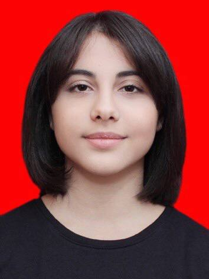

Khayala Hatamova

Summary
As a dedicated Computer Science student, I am fervently committed to advancing my skills and contributing meaningfully to the tech industry.
Driven by an insatiable curiosity and a love for problem-solving, I am seeking opportunities to apply and expand my knowledge in real-world scenarios. With a focus on innovation and a collaborative mindset, I am poised to make significant contributions to a dynamic team while furthering my own professional development.
Education
-
High School Degree
-
Secondary School N7 [15 Sep 2011-15 Jun 2022]
-
Code Academy
-
Cybersecurity [ 07 Dec 2022 - ]
-
Budapest University of Technology and Economics
-
Computer Science Engineering [ 04 Sep 2023- ]
Skills
- Language Skills
-
Mother tongue(s): Azerbaijani
-
English[Listening C1/Reading C1/Writing C1]
-
Turkish[Listening C1/Reading C1/Writing C1]
-
Digital Skills
-
Linux,Windows
- Performing Basic System Management Tasks
- Operating Running Systems
- Performing Advanced System Administration Tasks
- Managing Network Services
- Microsoft Office
- Microsoft Word
- Microsoft Excel
- Outlook
Soft Skills
- Written and Verbal skills
- Organizational and planning skills
- Team-work oriented
- Motivated
- Reliability
- Critical thinking
- Strategic Planning
- Presenting
Awards and Certifications
-
Certificate
- By the Ministry of Education of the Republic of Azerbaijan and the Central Bank of the Republic of Azerbaijan for winning the republican competition "Today's saving is tomorrow's guarantee" held among the pupils [26 May 2015]
- Internship Certificate
- By Center for Economic and Social Development [ 30 Jul 2021 ]
- Best Performance Certificate
- C.I.T of Computer Competition [ 29 Mar 2021 ]
- Certificate of participation
-
Citizen Equal rights and Equal Opportunities project [ Sep 2021 – Feb 2022 ]
- Certificate
-
Junior Startup Academy by New Space Innovation [ 01 June 2022 ]
- Completion Certificate
-
CISCO Networking Academy [ 13 Jul 2022 ]
- Volunteering Award
-
Open Government Debates Project [ 22 Jul 2022 ]
- Completion Certificate
-
CISCO Networking Academy [ 17 Aug 2022 ]
Other